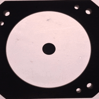

Proyecto de Clase: "Flujos de fluidos magnéticos en capas delagadas".
Autores: Mariana Martínez y F. Mandujano
Este proyecto surgió del experimento reportado en el artículo "The stability of magnetic soap films", Phys. Fluids 35 (2013). El experimento consiste del estudio de flujos en películas de jabon, que contienen nanopartículas magnéticas, producidos por un campo magnético externo. Para hacer el fluido la alumna M. Martínez fabricó, con bajo la asesoría del Dr. Rubén Mendoza en el Laboratorio de Materia Condensada y Criogénia del Instituto de Investigaciones en Materiales, nanopartículas de fierro con diferentes propiedas. El ferro-fluido que utilizamos en este experimento es una mezcla de estas nanoparticulas de fierro con una solución de agua, glicerina y jabón. Las primeras pruebas realizadas, para reproducir el experimento reportado en el artículo, se realizaron colocando una muestra del ferro-fluido en una caja de petri y exponiéndolo al campo magnético de un imán cilíndrico. Las nanopartículas se separaron del fluido haciendo patrones como los que se muestran en las figuras.
Planteamiento del experimento:
El experimento consiste de una capa de un fluido magnético en una caja de petri. El sistema se coloca sobre un imán de neodino en forma de pastilla. El fluido magnético es una mezcla de nanopartículas de fierro en una solución de agua jabonosa. Inicialmente el campo magnético jala a las partículas mas cercanas de manera que se produce una mancha circular oscura que marca la superficie del imán, como se ve en las figuras de arriba. Un tiempo después se forma una región menos oscura al centro separada por una anillo claro, en donde la densidad de nanoparticulas es muy baja. Entre estas dos regiones se observan flujos de nanoparticulas que forman estrucutras similares al caso de dedos vsicosos como se puede apreciar en el vídeo.
Video del experimento.
